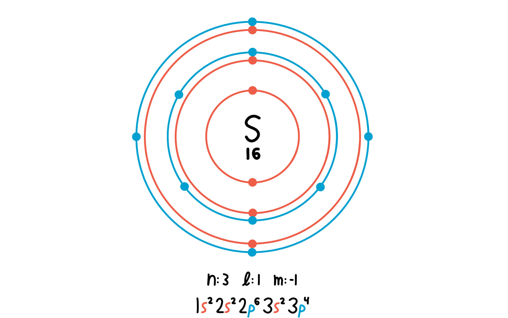

premesse teoriche
| tradizionale |
IUPAC |
formula |
immagine
|
| acqua distillata |
ossido di diidrogeno |
H2O |
|
|
|---|
| acido cloridrico |
cloruro di idrogeno |
HCl |
|
| iposolfito di sodio |
tiosolfato di sodio |
Na2S2O3 |
|
|
|---|
zolfo
|
S |
 |
| anidride solforosa |
diossido di zolfo |
SO2 |
|
| sale da cucina, salgemma |
cloruro di sodio |
NaCl |
|
Quando l'
acido cloridrico (
HCl) viene a trovarsi in soluzione con il
tiosolfato di sodio (
Na2S2O3) viene a originarsi una reazione spontanea di depositazione con cambio di colore in
“giallo zolfo” avente come reagenti i due appena elencati e come prodotti lo
zolfo (
S), l'
anidride solforosa (
SO2), il
cloruro di sodio (
NaCl) e l'
acqua distillata (
H2O). Secondo la formula:
Na2S2O3(aq)+2HCl(aq) ⟶ S(s)+SO2(g)+2NaCl(aq)+H2O(l)
Considerando
STV=Concentrazione del soluto=Tempo della reazione=Velocità di reazione
dove
- per “concentrazione del soluto” si intende la concentrazione del soluto preso in considerazione ai fini dell'analisi della velocità di reazione; nel caso di questo esperimento esso sarà il tiosolfato di sodio (Na2S2O3).
- Per “tempo della reazione” si intende la differenza di tempo che vi è tra l'inizio e la fine di una determinata reazione; nel caso di questa esperienza coincide col tempo misurato dal cronometro dl cellulare.
- E per “velocità di reazione” si considera la velocità stessa della reazione analizzata qui a seguire.
La
velocità di reazione sarà in relazione sia con la
concentrazione del soluto sia con il
tempo di reazione:
VV∼S∼T
Più precisamente, la
velocità di reazione avrà una proporzionalità diretta con la
concentrazione del soluto e una inversa con il
tempo di reazione:
VV∝S∝1T
In base a quanto appena detto a riguardo della
velocità di reazione possiamo affermare che vi sarà anche una proporzionalità tra
concentrazione del soluto e
tempo di reazione:
{VV∼S∼T⇒S∼V∼T⇒S∼T
Più precisamente, la
concentrazione del soluto sarà inversamente proporzionale al
tempo di reazione:
{VV∝S∝T−1⇒S∝V∝T−1⇒S∝T−1
Possiamo scrivere che la
velocità di reazione sia in relazione con la
concentrazione di soluto e con il
tempo di reazione:
{VV∼S∼T⇒V∼S ∧ V∼T⇒V ∼ S∧T
Più precisamente, possiamo scrivere che la
velocità di reazione sia direttamente proporzionale alla
concentrazione di soluto e inversamente proporzionale al
tempo di reazione:
{VV∝S∝T−1⇒V∝S ∧ V∝T−1⇒V ∝ S∧T−1
Con quest'ultima premessa possiamo, non in maniera propriamente corretta, considerare la
velocità di reazione equivalente al rapporto tra la
concentrazione di soluto e il
tempo di reazione:
V ∝ S∧T−1⇒V=ST
Calcoli e Procedimento logico
La tabella coi risultati che abbiamo tratto è:
| numero della reazione |
volume di tiosolfato di sodio (Na2S2O3)
|
volume di acqua distillata (H2O) |
volume di acido cloridrico (HCl)
|
tempo misurato |
| 1 |
10mL |
0mL |
10mL |
8.00s |
| 2 |
8mL |
2mL |
10mL |
8.29s |
| 3 |
5mL |
5mL |
10mL |
12.69s |
| 4 |
2mL |
8mL |
10mL |
35.14s |
| 5 |
8mL |
2mL di acqua calda distillata (H2O) |
10mL |
1.44s |
| 6 |
8mL |
2mL di acqua fredda distillata (H2O) |
10mL |
11.80s |
Innanzitutto possiamo tracciare un grafico contenente tutti i tempi misuarti, per poterli vedere in relazione tra loro:
Dopodiché, se prendessimo i primi
4 punti il grafico assumerebbe una forma simile:
E mettendo questi
4 tempi in funzione della quantità di
tiosolfato di sodio (
Na2S2O3):
Consideriamo, in base alle premesse teoriche, la
quantità di tiosolfato di sodio (Na2S2O3) e il
tempo rilevato come rispettivamente la
quantità di soluto e il
tempo della reazione:
quantità di tiosolfato di sodio (Na2S2O3)tempo rilevato=S=T
In base a quest'ultimo grafico possiamo supporre che vi sia una proporzionalità inversa tra
quantità di tiosolfato di sodio (Na2S2O3) e
tempo rilevato.
Verificabile tramite la premessa teorica secondo la quale vi sia una proporzionalità inversa tra
concentrazione di soluto e
tempo di reazione:
⎧⎩⎨⎪⎪S∝T−1{ST=quantità di tiosolfato di sodio (Na2S2O3)=tempo rilevato⇒quantità di tiosolfato di sodio (Na2S2O3) ∝ (tempo rilevato)−1
Considerando l'ultima premessa teorica e le sensibilità, possiamo trovare le
velocità di reazione dal rapporto tra la
quantità di tiosolfato di sodio (Na2S2O3) e il
tempo rilevato:
⎧⎩⎨⎪⎪⎪⎪⎪⎪⎪⎪V=STST= = 10.0mL,8.00s, 8.0mL,8.29s, 5.0mL,12.69s, 2.0mL,35.14s, 8.0mL,1.44s, 8.0mL11.80s⇓V= 1.25mL/s, 0.965mL/s, 0.394mL/s, 0.0569mL/s, 5.56mL/s, 0.678mL/s
Arrivando così a comporre un'altra tabella nella quale vi siano anche le
velocità di reazione:
| numero della reazione |
volume di tiosolfato di sodio (Na2S2O3)
|
volume di acqua distillata (H2O) |
volume di acido cloridrico (HCl)
|
tempo misurato |
velocità di reazione
|
| 1 |
10mL |
0mL |
10mL |
8.00s |
1.25mL/s |
| 2 |
8mL |
2mL |
10mL |
8.29s |
0.965mL/s |
| 3 |
5mL |
5mL |
10mL |
12.69s |
0.394mL/s |
| 4 |
2mL |
8mL |
10mL |
35.14s |
0.0569mL/s |
| 5 |
8mL |
2mL di acqua calda distillata (H2O) |
10mL |
1.44s |
5.56mL/s |
| 6 |
8mL |
2mL di acqua fredda distillata (H2O) |
10mL |
11.80s |
0.678mL/s |
Ponendo le
velocità di reazione delle prime
4 misure in funzione dei
tempi delle reazioni otterremo il grafico:
Dal quale possiamo osservare come la
velocità di reazione sia inversamente proporzionale al
tempo delle reazioni poiché quando una delle due misure cresce l'altra decresce.
Ciò è anche verificato dalla premessa teorica secondo la quale la
velocità di reazione è inversamente proporzionale al
tempo della reazione:
velocità delle reazioni ∝ (tempi rilevati)−1 ≡ V∝T−1
Estendendo l'ultimo grafico alle ultime due misurazioni:
Possiamo osservare come queste si vadano ad allineare alla proporzione.
Infine possiamo confrontare le misurazione con la variazione di temperatura.
Tracciando un grafico nel quale confrontare la misura numero
5, poiché quella utilizzante
acqua calda distillata (
H2O), con la misura numero
2, poiché avente stesso volume di
tiosolfato di sodio (
Na2S2O3) ,
potremmo osservare come la misura effettuata su una reazione avente una temperatura maggiore avrà una
velocità di reazione superiore e, rispettivamente, un
tempo di reazione inferiore.
Tracciando un simile grafico, nel quale confrontare la misura numero
6, poiché quella utilizzante
acqua fredda distillata (
H2O), con la misura numero
2, poiché avente stesso volume di
tiosolfato di sodio (
Na2S2O3) ,
potremmo osservare come la misura effettuata su una reazione avente una temperatura inferiore avrà una
velocità di reazione minore e, rispettivamente, un
tempo di reazione superiore.
osservazioni
L'esperienza, a mio giudizio, è stata particolarmente semplice e veloce rispetto al solito.
Non vi sono altre significative osservazioni da riportare.
conclusioni
L'esperienza di laboratorio sulle
velocità di reazione è stata svolta.
Siamo riusciti a dimostrare
- la relazione di proporzionalità inversa tra quantità di reagente e durata della reazione e
- la relazione di proporzionalità inversa tra la velocità di reazione e durata della reazione.
Inoltre abbiamo trovato che
- nelle reazioni con temperatura inferiore il rempo di reazione aumenta e, rispettivamente, la velocità della reazione diminuisce,
- contrariamente, nelle reazioni con temperatura superiore il rempo di reazione decresce e, rispettivamente, la velocità della reazione si incrementa.
Infine abbiamo aquisito maggiore esperienza e dimestichezza in laboratorio.